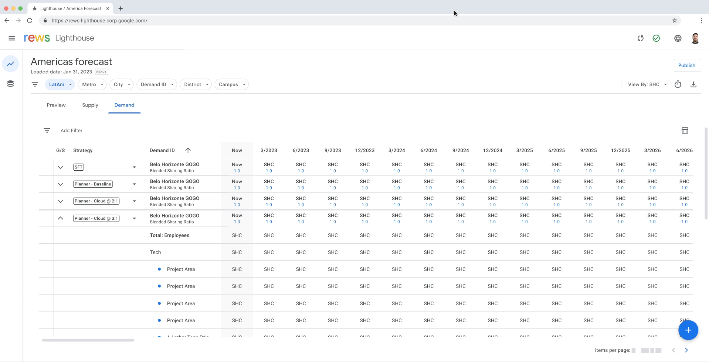
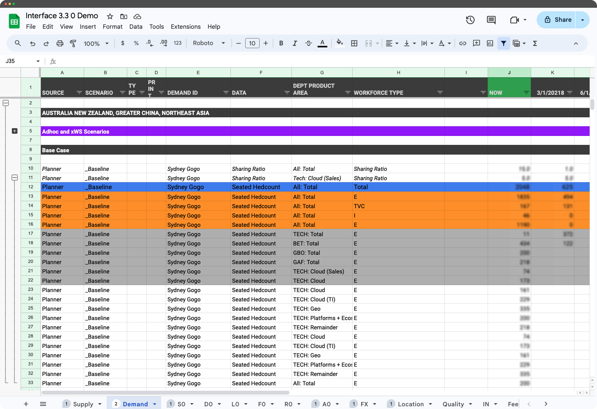
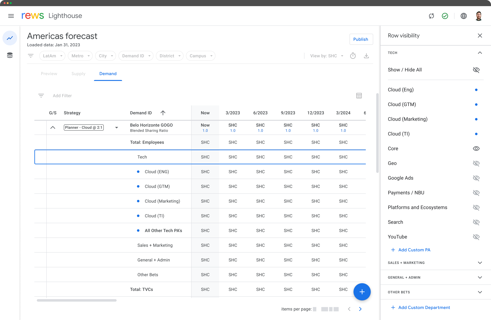
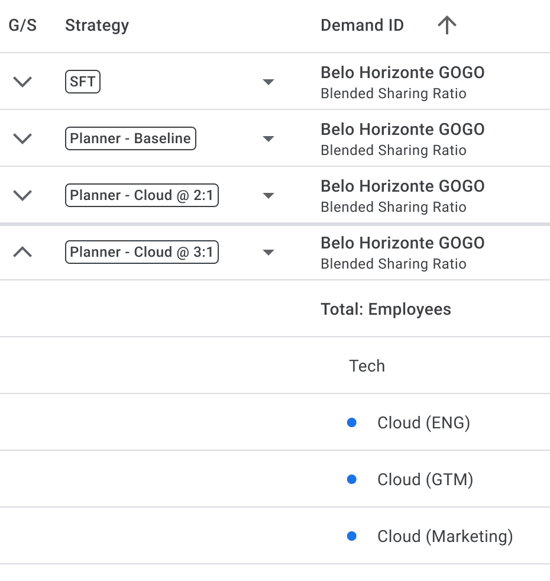
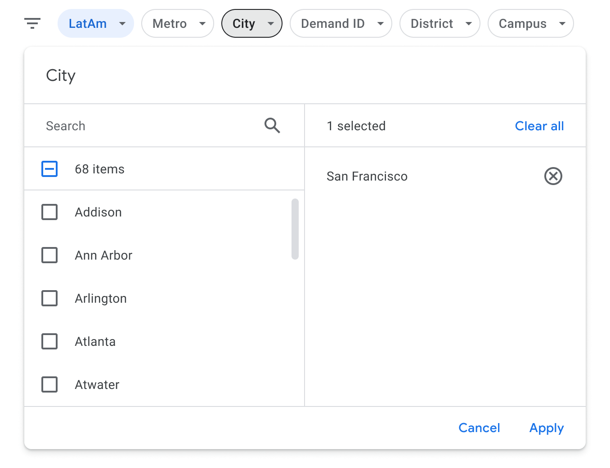
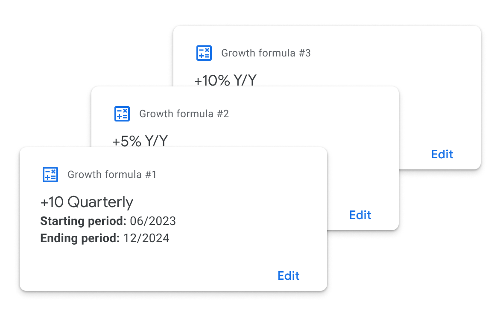
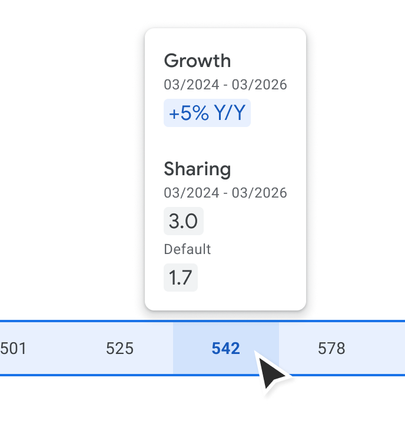
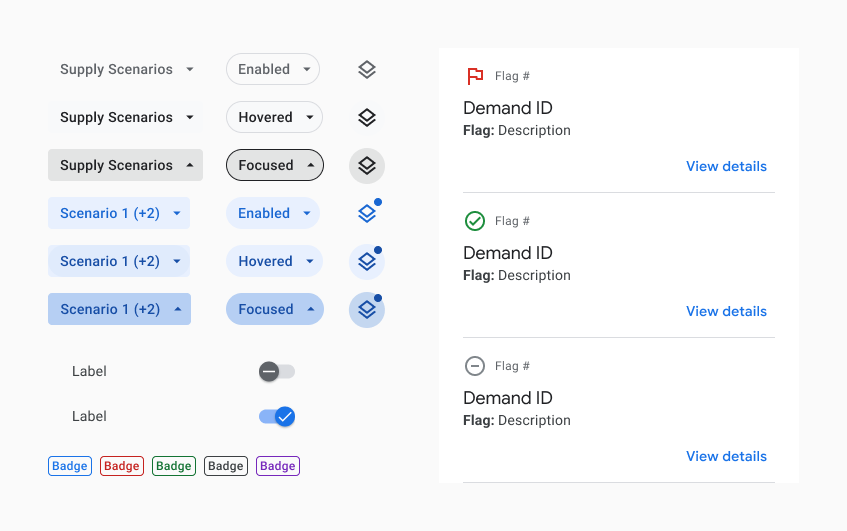
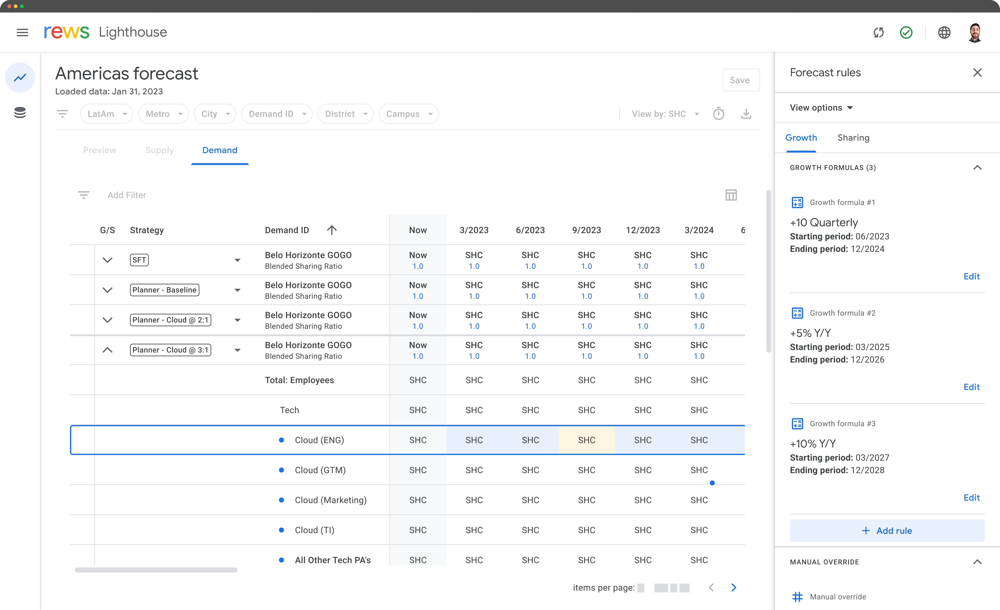

Lighthouse
Enhancing Real Estate Demand Modeling for Google's Global Office Portfolio
Overview
Lighthouse is a web-based application designed to model all of Google's global office space 10 years into the future. Built to meet the needs of real estate planners and analysts at Google Real Estate and Workplace Services (REWS), it transitions their workflows from a spreadsheet-based system to a more robust and user-friendly web-based platform.
The result? Lighthouse enabled 50% faster report generation for the planners and forecasters, transforming how Google manages hundreds of millions of square feet of office space worldwide.

Background (Spreadsheet Mania)
Currently Google models their hundreds of millions of square feet of global office space and millions of employees in a collection of Google Sheets files. The global group of planners who are modeling supply and demand scenarios to study long-term requirements of office space needed a more streamlined, consistent, and fast approach.
Pain Points with Current Approach
- • Infinitely configurable (no guardrails)
- • Lack of automation (tedious, manual process)
- • No data hierarchy and minimal organization
- • No filtering available

Existing tool that Google planners use (Sheets)
Approach

Side panel allowing users to quickly show & hide relevant data
With two primary goals—streamlining modeling processes and improving data visualization—I took the following approach:
- → Mapped Existing Pain Points: Conducted user research with Google planners to understand the workflow and prioritize solutions.
- → Simplified Operations: Designed a logical set of operations to enable consistent forecasting and scenario modeling.
- → Visual Hierarchy & Feedback: Crafted interfaces that highlighted data relationships, recent changes, and high-level insights at a glance.
Key Design Decisions

Clear Data Hierarchy
Organized structure for complex planning data

Global & Local Filtering
Flexible filtering and sorting at multiple levels

Simple & Powerful Logic
Intuitive customization without complexity

Visual Cues
Clear indicators for customizations and changes
Design System

Design system components
I was working within the Google Material design system, with a specific UI overlay on top of the default Material 2 library for REWS products. This system was not fully fleshed out, so throughout the course of development I had to create and manage some additional components.
Because of very tight build timelines, all of the components used had to be rigorously consistent with what is available in the existing Angular and React libraries.
Impact & Results
The Lighthouse application introduced several significant improvements over the current Sheets system for Google REWS:
Automated Calculations
Blended sharing ratios are now automatically calculated, saving planners up to 50% of their time preparing reports.
Enhanced Data Visibility
A toggle feature allows users to easily switch views between seats demand and full site data, enhancing decision-making processes.
Rule-Based Adjustment
Users can apply rule-based calculations across multiple periods, ensuring consistency and efficiency in their work.
Consistent UI Across Regions
A standardized UI improves usability and consistency in modeling demand scenarios across all geographies.
Upstream Data Integration
Direct integration with upstream data sources eliminates manual linking and ensures data integrity for Google REWS's planning processes.

Prototype showing a user making a forecast growth modification